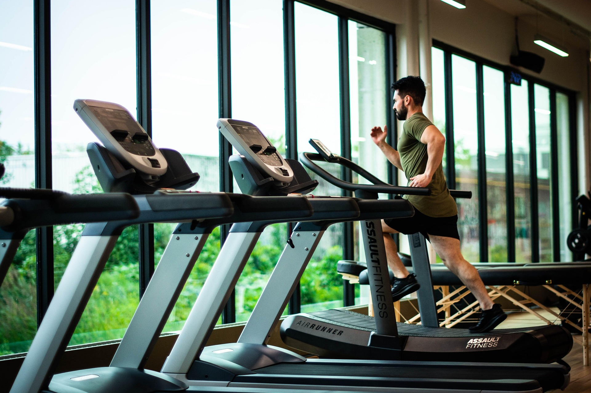

Aukioloajat ja osoite
Salimme ovet ovat auki jäsenille aamu viidestä ilta kymmeneen. Asiakaspalvelumme palvelee arkisin kello 9-18 ja lauantaisin kello 9-15.
Northwind Gym & Recovery sijaitsee paraati paikalla Vaasan keskustassa Koivupuiston reunalla osoitteessa Vaasankatu 1.
Tilat ja sijainti
Northwind Gym & Recovery Vaasa kartalla.
Kuvaus tiloista
Northwind Gym & Recovery tarjoaa kaupungin inspiroivimman ja teknisesti edistyksellisimmän ympäristön tavoiteelliseen harjoitteluun.
Olemme suunitelleet tilamme palvelemaan niin ammattiurheilijoita kuin aktiivisia liikujia, jotka eivät tyydy keskinkertaisuuteen.
Vapaa-paino alue erottuu selkeästi ja takaa oman rauhan treenaamiseen, saliltamme löytyy myös erillinen ryhmäliikunta tila joka on varustettu laadukaalla äänentoistolla ja joustavalla urheilulattialla.
Rajattu osallistujamäärä varmistaa,että jokainen saa tarvitsemansa tilan ja valmentajan huomion.
